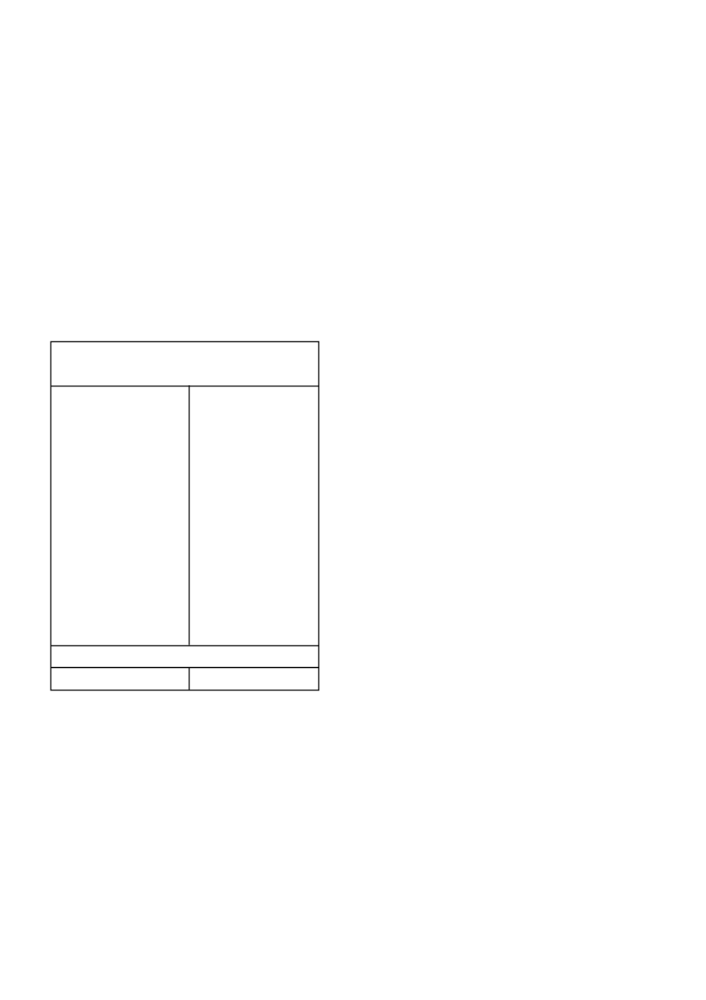

4.1 MINIMUM WAGPERIODES EN WISSELBOU-AANWY SINGS
Die minimum wagperiode dui op die tydsverloop vanaf die laaste
toediening van
BATELEUR GOLD
tot die verwagte tyd van aan-
planting van ‘n opvolggewas.
Om skade aan opvolggewasse te voorkom, moet die volgende
wagperiodes in ag geneem word:
•
Droëbone, sojabone, grondbone en mielies - geen.
•
Aartappels, koring en graansorghum - 3 maande.
•
Sonneblom - 5 maande.
•
Vir alle ander gewasse word ‘n wagperiode van ten minste 24
maande aanbeveel, voorafgegaan deur ‘n toetsplanting.
Belangrik
Bogenoemde wagperiodes geld slegs indien die korrekte hoeveel-
heid
BATELEUR GOLD
per grondsoort toegedien is op gronde
met ‘n pH (H
2
O) van minder as 7 en normale of bogemiddelde
reënval gedurende die seisoen waarin die toe diening gemaak is,
en daarna, voorgekom het.
5. ONKRUIDE WAT BEHEER WORD
Die volgende onkruidsoorte word normaalweg beheer deur
vooropkomtoedienings van
BATELEUR GOLD
teen die toe-
dieningshoeveelhede soos hieronder aangedui:
Amaranthus hybridus
gewone misbredie
Brachiaria eruciformis
litjiesinjaalgras
Chenopodium carinatum
groenhondebossie
Chloris virgata
witpluim-Chloris
Cleome monophylla
rusperbossie
Dactyloctenium aegyptium
hoenderspoor
Digitaria sanguinalis
kruisvingergras
Echinochloa crusgalli
hanepootmanna
Eleusine indica
jongosgras
Panicum schinzii
soetbuffelsgras
Panicum maximum
gewone buffelsgras
Portulaca oleracea
porslein
Pseudobrachiaria deflexa
bastersinjaalgras
Schkuhria pinnata
klein kakiebos
Setaria pallide-fusca
rooiborselgras
Setaria verticillata
klitsborselgras
Tagetes minuta
kakiebos
Tragus berteronianus
kleinwortelsaadgras
Tragus racemosus
grootwortelsaadgras
Tribulus terrestris
dubbeltjie
Urochloa mosambicensis
bosveldbeesgras
Urochloa panicoides
beesgras
Onkruid wat wisselvallig beheer word
Cyperus esculentus
geeluintjie
Belangrik
Geeluintjie
(
Cyperus esculentus
)
Die beheer van
C. esculentus
kan verbeter word deur aan die
volgende voorwaardes te voldoen:
•
Die plantproses onmiddellik voorafgegaan word deur ‘n deeg-
like ploegbewerking met ‘n skaarploeg.
•
‘n Relatiewe fyn, egalige en ferm saadbed voorberei word.
•
Die
onkruiddodertoediening gevolg word deur minstens 10
- 20 mm sagte deurdringende reën (of besproeiing) om die
on kruiddoder in die grond in te was voordat
C. esculentus
opkom (gewoonlik 7 - 10 dae na deeglike grondbewer-
king). Die moontlikheid vir hierdie toestande om voor te
kom, is groter tydens die laaste helfte van die plantseisoen
(November). Namate die grond swaarder word, is meer reën
of besproeiing nodig om goeie resultate te verkry. Om hierdie
rede is beheer soms baie swak op turfgronde.
•
Reënval na onkruiddoder toediening maar voor
C. esculentus
opkoms is noodsaaklik vir optimale
C
.
esculentus
beheer.
Gevolglik moet
BATELEUR GOLD
tydens of onmiddelik na
die plantproses in klam grond toegedien word.
•
Wanneer in droë grond geplant word (onvoldoende vog
om
C. esculentus
te laat ontkiem),
moet die toediening van
BATELEUR GOLD uitgestel word tot so na as moontlik
aan, maar beslis voor, die eerste reën.
Die beheer van bogenoemde onkruide mag nadelig beïnvloed
word deur die volgende omstandighede:
•
Swak voorbereide saadbed.
•
Gronde met ‘n pH (H
2
O) van minder as 5 en/of ‘n organiese
materiaalinhoud van meer as 3 %.
•
Droë toestande direk na toediening of onvoldoende reënval op
swaar gronde.
•
Grasdoders wat aan die chloorasetamied onkruiddodergroep
behoort (wat
BATELEUR GOLD
insluit) word via die koleop-
tiel van grasonkruide opgeneem. Vir goeie grasbeheer moet
hierdie onkruiddoders dus teen letale konsentrasies beskik-
baar wees in die boonste ± 50 mm van die grondprofiel. Die
adsorpsiekapasiteit van grond vir hierdie onkruiddoders, sowel
as die hoeveelheid water wat deur die grondprofiel beweeg
met reën/besproeiing, bepaal die gevolg
like konsentrasie van
die onkruiddoders in die boonste lae van die grondprofiel. As
gevolg van die lae adsorpsiekapasiteit van sandgronde (0 -
15% klei, <1% organiese materiaalinhoud) kan bogenoemde
onkruiddoders tot sub-letale vlakke in die boonste ± 50 mm
verlaag word na die voorkoms van deurdringende reën (25
mm en meer per dag). Aanhoudende reën (50 mm en meer
versprei oor 3 - 7 dae) sal dieselfde gevolg hê. Dit kan dus
gebeur dat grasse ontkiem as sulke toestande voorkom. ‘n
Splittoediening (soos aanbeveel in Tabel 1) word aanbeveel
indien
BATELEUR GOLD
op sulke gronde gebruik word.
Deurdringende en/of aanhoudende reën na die splittoedie ning
kan dieselfde gevolg hê. Onder bogenoemde toe stande kan
swak beheer van vlak-ontkiemende breëblaaronkruide soos
porslein en groenhonde bossie ook verwag word.
6. GEBRUIKSAANWYSINGS
Gebruik slegs soos aangedui
6.1 VERENIGBAARHEID
Die verenigbaarheid van
BATELEUR GOLD
met ander produkte
kan beïnvloed word deur die formulasie van die betrokke
produkte asook deur die kwaliteit van die water. Aangesien die
formulasie van produkte kan verander sonder die medewete van
Syngenta en die kwaliteit van die water ook van plaas tot plaas
kan varieër, moet ‘n fisiese verenigbaarheidstoets altyd uitge voer
word voordat gespuit word.
BATELEUR GOLD
is mengbaar met, GESAPRIM 90 WG
(L4764), GESAPRIM SUPER (L3914) en METAGAN GOLD
(L5748).
6.2 MENGINSTRUKSIES
Plaas deksel terug na gebruik
Maak die spuittenk halfvol met water en voeg die benodigde
hoeveelheid
BATELEUR GOLD
by. Vul die tenk verder met
water tot die verlangde volume in die spuittenk bereik word.
Die spuitmengsel moet tydens vermenging en toediening
voortdurend in roering gehou word.
Tenkmengsels moet onmiddellik uitgespuit word en nie
toegelaat word om in die spuittenk te staan nie.
6.3 TOEDIENINGSTEGNIEKE
6.3.1
Na-plant vooropkom
Wanneer in klam grond geplant word, moet
BATELEUR GOLD
binne drie dae na plant
(maar verkieslik tydens plant) op ‘n rela-
tiewe fyn, egalige, ferm en vars voorbereide onkruidvrye saadbed
toegedien word. Om goeie resultate te verkry, is dit noodsaaklik
dat die onkruiddodertoediening gevolg moet word deur reën of
besproeiing voordat die onkruid opkom. Indien reën nie betyds
voorkom nie en die onkruid begin opkom en ontwikkel, moet ‘n
vlak grondbewerking uitgevoer word om hierdie onkruid te ver-
nietig en die onkruiddoder met die boonste 10 - 20 mm grond-
lagie te vermeng.
BATELEUR GOLD
/ 2
